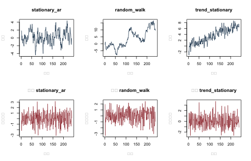
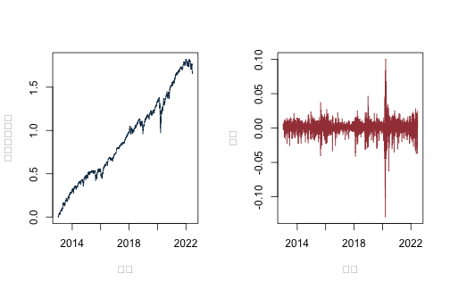
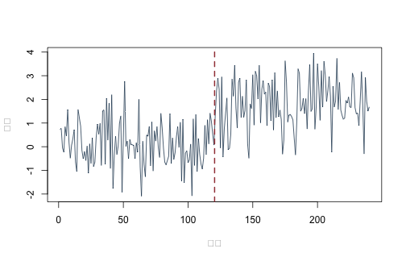
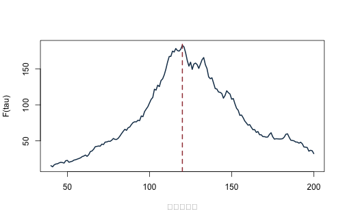
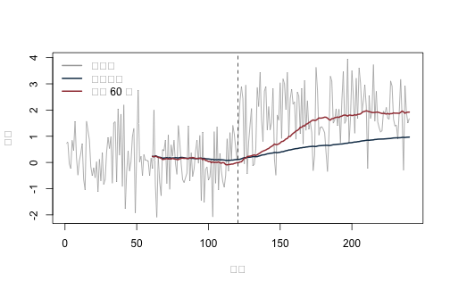

《財務時間序列分析》線上附錄
R07：單根、差分與結構變動
本附錄對應第 9--10 章。第一部分以固定種子比較定態 AR、隨機漫步與確定趨勢，手動建立 ADF 迴歸，並在完全指定的 i.i.d. 隨機漫步虛無下模擬有限樣本臨界值。第二部分核對已知平均數變動的平方和檢定、做回顧性未知日期搜尋，再以擴展與滾動平均示範不偷看未來的預測。
knitr::opts_chunk$set(
echo = TRUE, message = FALSE, warning = FALSE,
fig.width = 7, fig.height = 4.5
)
set.seed(20260716)
root_candidates <- c(".", "..")
is_root <- vapply(root_candidates, function(x) {
file.exists(file.path(x, "main.tex"))
}, logical(1))
stopifnot(any(is_root))
project_root <- root_candidates[which(is_root)[1]]
project_path <- function(...) file.path(project_root, ...)
三種看似持續的序列#
n <- 240L
stationary_ar <- as.numeric(arima.sim(
model = list(ar = 0.70), n = n, sd = 1
))
random_walk <- cumsum(rnorm(n))
trend_error <- as.numeric(arima.sim(
model = list(ar = 0.50), n = n, sd = 1
))
trend_stationary <- 0.03 * seq_len(n) + trend_error
series_matrix <- cbind(
stationary_ar = stationary_ar,
random_walk = random_walk,
trend_stationary = trend_stationary
)
par(mfrow = c(2, 3))
for (j in seq_len(ncol(series_matrix))) {
plot(
series_matrix[, j], type = "l", col = "#173B57",
main = colnames(series_matrix)[j],
xlab = "期數", ylab = "水準"
)
}
for (j in seq_len(ncol(series_matrix))) {
plot(
diff(series_matrix[, j]), type = "l", col = "#A34045",
main = paste("差分", colnames(series_matrix)[j]),
xlab = "期數", ylab = "一階差分"
)
}

par(mfrow = c(1, 1))
確定趨勢序列應去除時間趨勢後檢查誤差；隨機漫步則靠差分移除累積衝擊。只看水準圖不容易可靠區分。
手動建立 ADF 迴歸#
對每個設定估計 \[ \Delta Y_t=c+\beta t+\gamma Y_{t-1} +\sum_{j=1}^{p}\delta_j\Delta Y_{t-j}+u_t. \] 回傳的 statistic 是 \(\widehat\gamma\) 除以其 OLS 標準誤。它不能使用普通常態臨界值。
adf_statistic <- function(
y, lags = 0L,
deterministic = c("constant", "trend", "none")) {
deterministic <- match.arg(deterministic)
y <- as.numeric(y)
stopifnot(all(is.finite(y)), lags >= 0L)
dy <- diff(y)
idx <- (lags + 1L):length(dy)
response <- dy[idx]
X <- matrix(numeric(0), nrow = length(idx), ncol = 0L)
if (deterministic %in% c("constant", "trend")) {
X <- cbind(intercept = 1, X)
}
if (deterministic == "trend") {
X <- cbind(X, trend = idx + 1L)
}
X <- cbind(X, level_lag = y[idx])
if (lags > 0L) {
lagged_differences <- sapply(seq_len(lags), function(j) {
dy[idx - j]
})
if (lags == 1L) {
lagged_differences <- matrix(lagged_differences, ncol = 1L)
}
colnames(lagged_differences) <- paste0("diff_lag", seq_len(lags))
X <- cbind(X, lagged_differences)
}
fit <- lm.fit(X, response)
residual_df <- length(response) - fit$rank
sigma2 <- sum(fit$residuals^2) / residual_df
covariance <- sigma2 * solve(crossprod(X))
standard_error <- sqrt(diag(covariance))
gamma_index <- match("level_lag", colnames(X))
list(
statistic = unname(fit$coefficients[gamma_index] /
standard_error[gamma_index]),
gamma = unname(fit$coefficients[gamma_index]),
residual_df = residual_df,
residuals = fit$residuals,
coefficients = fit$coefficients,
design = deterministic,
lags = lags
)
}
以指定虛無模擬有限樣本臨界值#
以下臨界值只對「樣本長度 240、指定確定項與落後階數、i.i.d. 常態隨機漫步」的教學設計有效。它不是一般資料庫，也不能取代正式單根套件的 MacKinnon \(p\) 值或符合實證誤差結構的重抽樣。
simulate_adf_critical <- function(
n, lags, deterministic, B = 499L, seed = 1L) {
set.seed(seed)
statistics <- replicate(B, {
null_series <- cumsum(rnorm(n))
adf_statistic(
null_series, lags = lags,
deterministic = deterministic
)$statistic
})
c(
critical_01 = unname(quantile(statistics, 0.01)),
critical_05 = unname(quantile(statistics, 0.05)),
critical_10 = unname(quantile(statistics, 0.10))
)
}
critical_constant <- simulate_adf_critical(
n, lags = 2, deterministic = "constant",
B = 499, seed = 20260718
)
critical_trend <- simulate_adf_critical(
n, lags = 2, deterministic = "trend",
B = 499, seed = 20260719
)
rbind(constant = critical_constant, trend = critical_trend)
## critical_01 critical_05 critical_10
## constant -3.479505 -2.875708 -2.572609
## trend -4.050249 -3.460097 -3.105985
adf_ar <- adf_statistic(
stationary_ar, lags = 2, deterministic = "constant"
)
adf_rw <- adf_statistic(
random_walk, lags = 2, deterministic = "constant"
)
adf_trend <- adf_statistic(
trend_stationary, lags = 2, deterministic = "trend"
)
adf_table <- data.frame(
series = c("stationary AR(1)", "random walk", "trend stationary"),
deterministic = c("constant", "constant", "constant + trend"),
statistic = c(
adf_ar$statistic, adf_rw$statistic, adf_trend$statistic
),
simulated_critical_05 = c(
critical_constant["critical_05"],
critical_constant["critical_05"],
critical_trend["critical_05"]
)
)
adf_table$reject_in_exact_teaching_design <-
adf_table$statistic < adf_table$simulated_critical_05
adf_table
## series deterministic statistic simulated_critical_05
## 1 stationary AR(1) constant -5.675289 -2.875708
## 2 random walk constant -1.155182 -2.875708
## 3 trend stationary constant + trend -7.440159 -3.460097
## reject_in_exact_teaching_design
## 1 TRUE
## 2 FALSE
## 3 TRUE
模擬結果具有抽樣誤差；增加 B 可提高精度。ADF 未拒絕不等於證明有單根，拒絕也不排除結構變動或其他非定態。
固定金融面板的水準與差分示範#
把 89 檔股票的等權日簡單報酬 \(r_t\) 轉成 \(\sum_{s\leq t}\log(1+r_s)\)，得到一條教學用累積對數財富路徑。它不是可交易指數，以下也不對它宣告正式單根結論。
panel <- read.csv(
project_path(
"data", "processed", "sp500_returns_balanced_2013_2022.csv"
),
check.names = FALSE
)
panel_dates <- as.Date(panel$date)
panel_returns <- as.matrix(
panel[, setdiff(names(panel), "date")]
)
storage.mode(panel_returns) <- "double"
equal_weight_return <- rowMeans(panel_returns)
stopifnot(all(equal_weight_return > -1))
cumulative_log_wealth <- cumsum(log1p(equal_weight_return))
par(mfrow = c(1, 2))
plot(
panel_dates, cumulative_log_wealth, type = "l",
col = "#173B57", xlab = "日期", ylab = "累積對數財富"
)
plot(
panel_dates, c(NA, diff(cumulative_log_wealth)), type = "l",
col = "#A34045", xlab = "日期", ylab = "差分"
)

par(mfrow = c(1, 1))
日報酬有厚尾與條件異質變異，前述 i.i.d. 隨機漫步模擬臨界值不適合直接套用。正式實證應使用明確版本的單根程序並報告確定項、落後階數與臨界值來源。
先核對課文的已知變動點例#
toy_break <- c(-1, 0, 1, 1, 2, 3)
toy_tau <- 3L
ssr_restricted <- sum((toy_break - mean(toy_break))^2)
ssr_unrestricted <- sum(
(toy_break[1:toy_tau] - mean(toy_break[1:toy_tau]))^2
) + sum(
(toy_break[(toy_tau + 1L):length(toy_break)] -
mean(toy_break[(toy_tau + 1L):length(toy_break)]))^2
)
toy_F <- ((ssr_restricted - ssr_unrestricted) / 1) /
(ssr_unrestricted / (length(toy_break) - 2))
c(
SSR_restricted = ssr_restricted,
SSR_unrestricted = ssr_unrestricted,
F = toy_F
)
## SSR_restricted SSR_unrestricted F
## 10 4 6
stopifnot(
ssr_restricted == 10,
ssr_unrestricted == 4,
toy_F == 6
)
固定種子平均數變動#
set.seed(20260720)
n_break <- 240L
true_break <- 120L
break_series <- c(
rnorm(true_break, mean = 0, sd = 1),
rnorm(n_break - true_break, mean = 2, sd = 1)
)
plot(
break_series, type = "l", col = "#173B57",
xlab = "期數", ylab = "數值"
)
abline(v = true_break + 0.5, col = "#A34045", lwd = 2, lty = 2)

已知變動點#
mean_before <- mean(break_series[1:true_break])
mean_after <- mean(break_series[(true_break + 1L):n_break])
ssr_R <- sum((break_series - mean(break_series))^2)
ssr_U <- sum(
(break_series[1:true_break] - mean_before)^2
) + sum(
(break_series[(true_break + 1L):n_break] - mean_after)^2
)
F_known <- ((ssr_R - ssr_U) / 1) /
(ssr_U / (n_break - 2))
c(
mean_before = mean_before,
mean_after = mean_after,
SSR_restricted = ssr_R,
SSR_unrestricted = ssr_U,
F_known = F_known
)
## mean_before mean_after SSR_restricted SSR_unrestricted
## 0.1127998 1.8286988 406.3765272 229.7179464
## F_known
## 183.0276776
這個 \(F\) 公式的經典參考分配需要固定變動點與等變異獨立常態誤差。這裡資料生成過程刻意符合簡化假設；金融資料通常需要更穩健的方法。
未知日期的回顧性搜尋#
每一側至少保留 40 筆，只在修剪後候選集合搜尋。最大統計量不能拿單一固定日期的普通 \(F\) 臨界值。
break_F <- function(y, tau) {
n <- length(y)
ssr_r <- sum((y - mean(y))^2)
ssr_u <- sum((y[1:tau] - mean(y[1:tau]))^2) +
sum((y[(tau + 1L):n] - mean(y[(tau + 1L):n]))^2)
((ssr_r - ssr_u) / 1) / (ssr_u / (n - 2))
}
candidate_dates <- 40:(n_break - 40)
F_path <- vapply(
candidate_dates,
function(tau) break_F(break_series, tau),
numeric(1)
)
estimated_break <- candidate_dates[which.max(F_path)]
c(
true_break = true_break,
retrospective_estimate = estimated_break,
supremum_F = max(F_path)
)
## true_break retrospective_estimate supremum_F
## 120.0000 120.0000 183.0277
plot(
candidate_dates, F_path, type = "l", lwd = 2,
col = "#173B57", xlab = "候選變動點", ylab = "F(tau)"
)
abline(v = true_break, col = "#A34045", lty = 2, lwd = 2)

不知道變動日的擬即時預測#
以下預測器從第 60 期起，一個使用全部歷史平均，另一個使用最近 60 期平均。兩者都沒有讀取 true_break 或回顧性 estimated_break 來形成預測；真實變動日只在事後分組評分時使用。
origins <- 60:(n_break - 1L)
online_results <- do.call(rbind, lapply(origins, function(origin) {
data.frame(
origin = origin,
target = origin + 1L,
model = c("expanding_mean", "rolling_60"),
forecast = c(
mean(break_series[1:origin]),
mean(break_series[(origin - 59L):origin])
),
actual = break_series[origin + 1L],
training_start = c(1L, origin - 59L),
training_end = origin
)
}))
online_results$error <- online_results$actual - online_results$forecast
online_results$period <- ifelse(
online_results$target <= true_break, "pre_break", "post_break"
)
stopifnot(all(
online_results$training_end < online_results$target
))
online_score <- do.call(
rbind,
lapply(
split(
online_results,
list(online_results$model, online_results$period),
drop = TRUE
),
function(z) c(
n = nrow(z),
RMSE = sqrt(mean(z$error^2)),
MAE = mean(abs(z$error))
)
)
)
round(online_score, 4)
## n RMSE MAE
## expanding_mean.post_break 120 1.5950 1.3402
## rolling_60.post_break 120 1.2561 0.9857
## expanding_mean.pre_break 60 0.9273 0.7755
## rolling_60.pre_break 60 0.9291 0.7776
plot(
break_series, type = "l", col = "gray65",
xlab = "期數", ylab = "數值"
)
for (nm in unique(online_results$model)) {
z <- online_results[online_results$model == nm, ]
lines(
z$target, z$forecast,
col = if (nm == "expanding_mean") "#173B57" else "#A34045",
lwd = 2
)
}
abline(v = true_break + 0.5, lty = 2, col = "black")
legend(
"topleft",
c("實際值", "擴展平均", "滾動 60 期"),
col = c("gray65", "#173B57", "#A34045"),
lty = 1, lwd = 2, bty = "n"
)

滾動視窗可能較快適應新平均數，但在穩定期使用較少資料，估計變異較大。視窗 60 若要在真實研究中選擇，必須在獨立驗證期調校，不能依本例測試結果事後決定。
最終檢核#
- ADF 的確定項與落後階數會改變臨界值與對立假設。
- 普通 OLS 的 \(t\) 分配不適用於單根虛無。
- 未知變動點搜尋的最大統計量需要專用臨界值。
- 回顧性變動日可解釋歷史，不能偷偷放回更早的預測起點。
- 結構變動分析應同時檢查平均數、動態與條件變異。